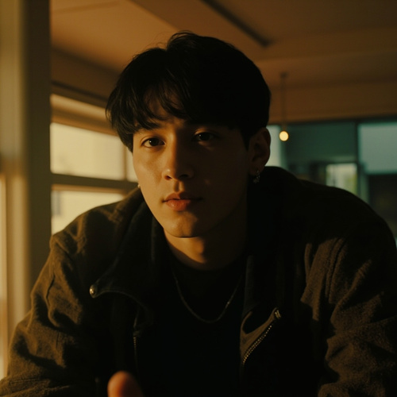

BTS' Kim Taehyung Returns to Acting with Short Film 'Inner' Releasing Today

BTS' Kim Taehyung, known worldwide as V, is making his much-anticipated return to acting. The short film "Inner" is set to release today, April 10, 2026.
This marks V's first on-screen project since his acclaimed performance in the 2022 drama "One Fine Day." The announcement comes on the heels of V's successful solo album "ARIRANG" which has been receiving critical acclaim.
A Poster Worth a Million Words
A poster released earlier this week featured V in a school uniform, sitting on a front-row bench — an image that instantly went viral across social media platforms. The poster generated millions of interactions within hours.
The short film is described as a heartfelt story about self-discovery and the internal struggles many young adults face.
V's Acting Journey
V debuted as an actor with "One Fine Day," a romantic drama that showcased his natural acting ability. The series earned him critical praise and a dedicated fanbase as an actor.
"Inner" is set to premiere at midnight KST tonight, with a special screening for fans being organized in Seoul.